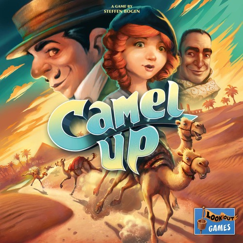
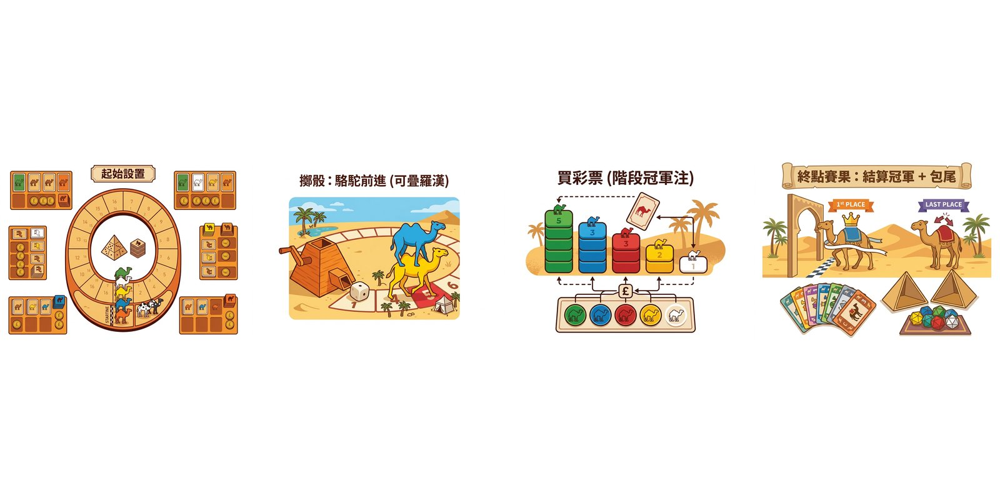

埃及沙漠, 5 隻駱駝賽跑, 你落注邊隻贏。但有 2 隻瘋狂駱駝會騎上去 — 疊羅漢嘅瞬間, 頭馬可以一秒變包尾。駱駝大賽嘅魔力在於: 規則簡單到 5 分鐘教完, 但心理戰可以玩到天光。
為咩好玩: 🎲 8 人派對王, 規則最淺但落注心理戰深

埃及沙漠, 5 隻駱駝賽跑, 你落注邊隻贏。但有 2 隻瘋狂駱駝會騎上去 — 疊羅漢嘅瞬間, 頭馬可以一秒變包尾。駱駝大賽嘅魔力在於: 規則簡單到 5 分鐘教完, 但心理戰可以玩到天光。
為咩好玩: 🎲 8 人派對王, 規則最淺但落注心理戰深
⚡ 快速上手 — 2 分鐘上手: 新手 2 分鐘內上手, 記住呢 6 條:

一句話總覽: 派對賭博式賽駱駝, 駱駝會疊羅漢, 落注 (階段冠軍 / 終點冠軍 / 終點包尾)。規則簡單但心理戰有趣, 8 人可以一齊玩。
疊羅漢嘅派對賽跑
駱駝大賽 2.0 係 2014 年 Steffen Bogen 設計嘅派對賭博遊戲, 由 Eggertspiele 同 Pegasus Spiele 出版, 旺角多間店有售 (主流通行英文版, 中文版 2020 年後偶爾出現)。遊戲背景係埃及沙漠駱駝賽跑, 五隻彩色駱駝 (黃 / 綠 / 白 / 黑 / 紅) 喺賽道上跑, 玩家透過擲骰令駱駝前進、落注賺錢。
駱駝大賽 2.0 嘅獨特機制係「駱駝疊羅漢」: 後面嗰隻駱駝行到前面嗰隻嘅位置, 會疊上去一齊行, 之後擲到該駱駝會連後面疊住嗰隻一齊行。呢個機制令賽事形勢瞬息萬變, 頭馬可以一秒變包尾, 製造大量反轉同笑聲。
呢個 桌遊 適合 2-8 人, 8 人滿場最熱鬧, 教學時間 10 分鐘, 一局 30 分鐘, 難度簡單。旺角夜場必擺, 派對王。
將 5 隻駱駝放喺賽道起點 (1 格)。每個玩家攞 5 金幣 (3 人以下改 6 金)。5 隻駱駝嘅「終點賽果」牌 (每隻 2 張, 一張冠軍一張包尾) 洗好放喺中央, 玩家之後用嚟落終點注。中央擺好「階段冠軍」落注格 (5 格, 對應 5 隻駱駝)。每個玩家攞一塊駱駝板 (上面有 5 隻駱駝嘅方格) 同 5 個「觀眾圖板」(Oasis / Mirage)。
每個玩家輪流做其中一個動作。首先擲骰嘅玩家揀 1 隻駱駝, 擲對應顏色嘅骰。骰結果 (1/2/3) 令該駱駝前進。重要: 如果該駱駝背後有其他駱駝 (疊羅漢), 全部一齊行。擲完將駱駝放喺新位置, 維持疊羅漢順序 (底層先, 上面後)。
輪到你時可以將一塊觀眾圖板 (Oasis 或 Mirage) 放喺賽道任何一格。Oasis (綠色) 令經過該格嘅駱駝額外行多 1 格, Mirage (紫色) 令經過嘅駱駝少行 1 格。觀眾圖板一旦放咗就喺度直到有駱駝經過 trigger 為止, 之後移除。
買一張「階段冠軍」彩票, 揀你覺得呢一局 (出晒 5 個骰) 會跑贏嘅駱駝。每隻駱駝對應一格落注區, 由上到下代表「最多人買」到「冇人買」, 賠率由 1 金贏 1 金 (熱門) 到 1 金贏 5 金 (冷門)。買彩票要即時俾錢, 將彩票放喺該格上面。越遲買落冷門駱駝, 賠率越高。
💡 例子 例: 8 人場, 第 1 位擲骰後 5 隻駱駝分佈 — 黃色 5 格領先, 紅色 3 格托住黃色, 綠色 1 格包尾。最佳落注: 紅色「階段冠軍」 (1:1 但穩贏) + 綠色「終點包尾」 (1:3 高賠率)。Mirage 擺黃色下一格拖慢佢, Oasis 擺綠色下一格幫佢追。
落「終點冠軍」或「終點包尾」注, 玩法係: 將一張「終點賽果」牌面朝下放喺你嘅駱駝板對應位置 (冠軍/包尾 × 對應駱駝)。你唔可以重複落同一隻駱駝同一位置。每張終點注嘅獎金係 8 金 (冠軍) 或 1 金 + 1 金 / 2 金 / 3 金 (包尾, 越早落越平, 越遲落越貴)。
一局完結嘅條件: 5 個駱駝骰 (5 隻駱駝每隻擲 1 次) 全部擲過, 或者有任何一隻駱駝過咗或踩到終點線。如果有駱駝過終點, 整個遊戲即時完結, 跳去 步驟 8。如果只係 5 個骰擲晒但冇駱駝過終點, 結算「階段冠軍」彩票, 然後開始新一局。
一局完結時, 領先嗰隻駱駝 (最前位置) 贏。對應格嘅所有彩票持有人由下至上 (最早買排最下) 攞獎金: 賠率 1 金 → 5 金 (視乎買入次序)。最尾買嗰個賺最多。
整個遊戲 (唔係一局) 完結時, 揭曉所有「終點賽果」牌: 冠軍嗰隻駱駝對應所有「終點冠軍」注 (每注 8 金), 包尾嗰隻對應所有「終點包尾」注 (每注 1/2/3 金, 視乎落注時段)。如果同一隻駱駝同時係冠軍同包尾 (因為疊羅漢) ? 規則: 兩者都計, 玩家兩邊都贏。
駱駝大賽 2.0 嘅 和局處理 比較簡單 (因為金幣結算容易):
來源: BGG comment 確認, 官方規則書 (Eggertspiele 2014) 寫法簡單, 主要是金幣結算。你可以上 BGG: https://boardgamegeek.com/boardgame/153938/camel-up
重要注意: 駱駝大賽 2.0 嘅 和局處理 同舊版 1.0 唔同。1.0 嘅 和局處理 規則更簡單 (只計金幣, 平手就 共享勝)。新手要 問清楚玩家用邊一版, 旺角 8 成以上都係 2.0。
駱駝大賽 2.0 喺旺角嘅定位係「新手第一隻, 派對王, 8 人滿場最熱鬧」。
旺角新手入門, 問「我哋 8 個人想玩, 30 分鐘內完」, 駱駝大賽係標準答案。
揀「冠軍」嘅駱駝落注, 忽略「疊羅漢」效應。高手會揀「托」嘅駱駝, 即揹住最多同黨嗰隻。
Mirage 戰略值 2 倍 Oasis, 因為 Mirage 拖慢領先者而 Oasis 推落後者 (推唔郁)。
坐第 1 位擲骰, 之後 7 個人可以根據新形勢落注, 最靈活。坐最後 1 位最蝕底但可以揀最冷門注。
永遠先擺 Mirage 喺領先嗰隻嘅下一格, 拖慢佢。Oasis 擺喺落後嗰隻嘅下一格, 幫佢追。
2.0 和局處理較複雜但有 Mirage/Oasis 變化, 旺角 8 成以上都係 2.0, 如果你想確認。
新手可以一併推薦:
新手 5 分鐘掌握:


有問題、想分享戰術、或者搵遊戲partner？DM 我哋 Instagram:
📷 Instagram DM →
之後會加 Giscus 留言系統 (GitHub Discussions-based, 實時 + email 通知)